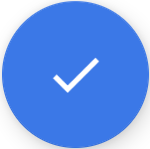
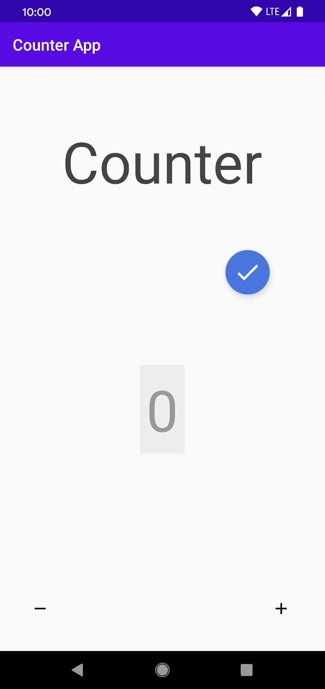

Os aplicativos mobile podem ajudar as pessoas a realizar tarefas diárias. No entanto, pessoas com deficiência podem enfrentar várias barreiras ao usar os recursos desses dispositivos se eles não fornecerem acessibilidade adequada. Desenvolvedores de software desempenham um papel crucial na promoção de melhorias de acessibilidade digital, e os testes automatizados podem ajudá-los.
Este tutorial visa abordar esses desafios e capacitar profissionais de desenvolvimento, design e teste para enfrentar as complexidades da acessibilidade em soluções mobile. Com foco em aplicativos Android nativos, exploraremos abordagens e ferramentas para testar e melhorar a acessibilidade. Ao final do tutorial, você será capaz de criar aplicativos com acessibilidade.
Serão apresentadas três alternativas de ferramentas disponíveis para auxiliar a realização de testes de acessibilidade em aplicativos Android nativos. Você será guiado a identificar problemas de acessibilidade em um aplicativo de exemplo – um app Contador – com cada uma das ferramentas apresentadas.
Serão utilizadas as seguintes ferramentas:
Para cada ferramenta, serão fornecidas as instruções passo-a-passo para preparação, configuração, escrita dos testes (quando aplicável), execução e visualização dos resultados. Ao final também haverá um passo-a-passo para solucionar os problemas encontrados e re-executar os testes.
Não é necessário nenhum conhecimento prévio sobre acessibilidade ou testes automatizados para realizar este codelab. No entanto, assumimos que você:
Ao realizar este codelab, você será capaz de:
Neste codelab, você trabalhará com um aplicativo existente, o Contador, derivado do Google Codelabs. Este aplicativo permite aos usuários rastrear, incrementar e decrementar uma contagem numérica. Embora o aplicativo seja simples, você descobrirá que ele tem alguns problemas de acessibilidade que podem dificultar que usuários com deficiência interajam com ele.
Você pode obter o código-fonte da versão inicial do aplicativo neste link.
Você será orientado a executar testes de acessibilidade para identificar esses problemas com cada uma das três ferramentas apresentadas neste tutorial. Para isso, você pode, de acordo com suas habilidades e preferências, escolher entre as seguintes opções:
https://github.com/AALT-Framework/poor-accessibility-apps/Exemplo em Linux
git clone https://github.com/AALT-Framework/poor-accessibility-apps/
cp -r poor-accessibility-apps/Contador Contador-AccessibilityScanner
cp -r poor-accessibility-apps/Contador Contador-Espresso
cp -r poor-accessibility-apps/Contador Contador-AATK
https://github.com/AALT-Framework/poor-accessibility-apps/git clone https://github.com/AALT-Framework/poor-accessibility-apps/
cd poor-accessibility-apps
git checkout -b AccessibilityScanner
git checkout -b Espresso
git checkout -b AATK
git checkout AccessibilityScanner
O Scanner de acessibilidade (Accessibility Scanner) é uma ferramenta criada pelo Google para sugerir melhorias de acessibilidade em apps Android, como aumento de áreas de toque pequenas, aumento de contraste e descrições de conteúdo. Elas possibilitam que pessoas com deficiência possam usar os apps com mais facilidade.
O Scanner de acessibilidade cria um botão de ação flutuante (FAB, na sigla em inglês) azul que fica sobreposto ao conteúdo na tela.

Você pode tocar no FAB para iniciar uma verificação de acessibilidade. Faremos isso daqui a pouco. Para mover o FAB para outra área da tela, mantenha-o pressionado e arraste.
Nesta seção, você vai fazer uma auditoria de acessibilidade da tela usando o Scanner de acessibilidade:
O Scanner de acessibilidade tem cinco sugestões para melhorar a acessibilidade do Contador.
O Scanner de acessibilidade recomenda corrigir o contraste de cores na visualização que mostra a contagem atual.
O Scanner sinaliza os rótulos ausentes em ImageButtons - e + , o que impossibilita que usuários de leitores de tela entendam o propósito desses controles.
- e + e leia as sugestões relacionadas aos rótulos ausentes.Além dos rótulos ausentes, o Scanner sugere aumentar a área de toque dos botões - e +.
No Contador, o contraste de cor é simples de melhorar. A TextView que mostra a contagem usa um plano de fundo cinza-claro com texto cinza:
<TextView
...
android:background="@color/lightGrey"
android:textColor="@color/grey"
...
/>
Você pode remover o plano de fundo, escolher outro mais claro ou deixar o texto mais escuro. Neste codelab, vamos escolher uma cor mais escura para o texto. Veja algumas cores que foram definidas em colors.xml:
<?xml version="1.0" encoding="utf-8"?>
<resources>
...
<color name="lightGrey">#EEEEEE</color>
<color name="grey">#999999</color>
<color name="darkGrey">#666666</color>
</resources>
Abra res/layout/activity_main.xml e mude android:textColor="@color/grey" para android:textColor="@color/darkGrey":
<TextView
...
android:background="@color/lightGrey"
android:textColor="@color/darkGrey"
...
/>
Agora, execute o app e veja o contraste melhorado:
Antes | Depois |
 |
A proporção de contraste agora é de 4.94:1, consideravelmente melhor que 2.45:1, que é o que tínhamos antes:
Contexto | Cor do texto | Taxa de contraste | |
Antes | #EEEEEE | Cinza-claro (#999999) | 2.45:1 |
Depois | #EEEEEE | Cinza-escuro (#666666) | 4.94:1 |
Pressione o FAB para iniciar outra verificação no Scanner de acessibilidade. Você verá que o app não tem mais sugestões relacionadas ao contraste de cor.
Como - e + ImageButtons não têm rótulos, um leitor de tela como o TalkBack não consegue comunicar adequadamente a semântica das visualizações para o usuário, anunciando simplesmente "Botão sem rótulo" quando um botão é focado.
Para corrigir esse problema, atribua uma android:contentDescription para cada botão:
<ImageButton
android:id="@+id/subtract_button"
...
android:contentDescription="@string/decrement" />
<ImageButton
android:id="@+id/add_button"
...
android:contentDescription="@string/increment" />
Use strings localizadas nas descrições de conteúdo. Assim, elas poderão ser adequadamente traduzidas. Para este codelab, as strings já foram definidas em res/values/strings.xml.
Agora, um leitor de tela pode anunciar o valor da contentDescription fornecida (adequadamente traduzida para o idioma local) quando o usuário foca nos botões.
Execute o Scanner de acessibilidade novamente. Não há mais sugestões relacionadas a rótulos ausentes.
O Scanner de acessibilidade continua sugerindo que os botões - e + precisam ter uma área de toque maior. Nesta etapa, seguiremos essa sugestão.
Os dois botões no Contador são pequenos (24dp x 24dp). No geral, o tamanho adequado para a área de toque de itens focáveis precisa ser, pelo menos, de 48dp x 48dp. Se for possível criar uma área ainda maior, melhor. Ao aumentar a área de toque de 24dp x 24dp para 48dp x 48dp, ela é expandida por um fator de 4.
Você tem várias opções para aumentar a área de toque dos botões. Por exemplo, você pode escolher uma destas opções:
minWidth e/ou minHeight (os ícones ficarão maiores).Adicione um pouco de padding a cada visualização:
<ImageButton
...
android:padding="@dimen/icon_padding"
... />
<ImageButton
...
android:padding="@dimen/icon_padding"
... />
O valor de @dimen/icon_padding está definido como 12dp (veja res/dimens.xml). Quando o padding é aplicado, a área de toque do controle se torna 48dp x 48dp (24dp + 12dp em cada direção).
Execute o app novamente para confirmar os novos limites de layout. Agora, a área de toque dos botões é maior.
Execute o Scanner de acessibilidade novamente. Desta vez, a análise será concluída sem sugestões.
Navegue para Configurações > Acessibilidade e defina o Scanner de acessibilidade como Desativado.
O Espresso é um framework de teste de interface do usuário para aplicativos Android, permitindo que os desenvolvedores criem testes automatizados para interagir com os elementos da interface do usuário do aplicativo. É integrado com o Android Studio e pode ser executado em dispositivo físico ou emulado.
Para testar acessibilidade com o Espresso, é possível usar a API AccessibilityChecks do Framework de Testes de Acessibilidade (ATF, na sigla em inglês).
Algumas das checagens realizadas pelo ATF incluem:
No Android Studio, abra o projeto do aplicativo Contador, da pasta especificada para o Espresso no 2º passo deste treinamento.
Você precisará de uma nova dependência para o pacote androidTestImplementation. Confira se a linha seguinte já foi adicionada para você no arquivo app/build.gradle.
dependencies {
...
androidTestImplementation 'androidx.test.espresso:espresso-accessibility:3.3.0-alpha05'
...
}
MainActivityInstrumentedTest. Assim você saberá que esta classe de teste instrumentado se refere à MainActivity.Com a classe MainActivityInstrumentedTest gerada e aberta, crie seu primeiro teste. Para o propósito deste codelab, será escrito apenas um único teste, que verifica se o código para incrementar a contagem funciona corretamente (por questões de brevidade, o teste para decrementar a contagem foi omitido). Sua classe deverá ficar assim:
public class MainActivityInstrumentedTest {
@Rule
public ActivityScenarioRule<MainActivity> mActivityTestRule = new ActivityScenarioRule<>(MainActivity.class);
@Test
public void testIncrement(){
Espresso.onView(withId(R.id.add_button))
.perform(ViewActions.click());
Espresso.onView(withId(R.id.countTV))
.check(matches(withText("1")));
}
}
Primeiro, verifique se o seu computador está conectado a um dispositivo com a depuração USB ativada.
Agora execute os testes clicando no botão de seta verde imediatamente à esquerda de @Test public void testIncrement(). Se você estiver usando um dispositivo físico conectado via USB, certifique-se de que o dispositivo esteja desbloqueado e com a tela ligada. Observe que pressionar Ctrl+Shift+F10 (Control+Shift+R em um Mac) executa os testes no arquivo atualmente aberto.
O teste deve ser executado até o final e deve passar, confirmando que o incremento da contagem funciona como esperado.
Na próxima seção, você irá modificar o teste para verificar também a acessibilidade.
Com o Espresso, você pode habilitar verificações de acessibilidade chamando AccessibilityChecks.enable() de um método de configuração. Adicionar essa única linha de código permite que você teste sua interface do usuário para acessibilidade, tornando fácil integrar a verificação de acessibilidade em seu conjunto de testes.
Para configurar a classe MainActivityInstrumentedTest para checagens de acessibilidade, adicione o seguinte método de configuração antes do seu teste.
@BeforeClass
public static void beforeClass()
{
AccessibilityChecks.enable();
}
Agora execute o teste novamente. Desta vez, você perceberá que o teste falha. No painel Run, clique duas vezes em testIncrement para ver os resultados. Você notará a mensagem de erro.
O teste falhou porque o ATF encontrou duas oportunidades para melhorar a acessibilidade do aplicativo:
Nesta etapa, você fará alterações no arquivo res/layout/activity_main.xml para atender às sugestões do ATF que estão causando falhas nos seus testes (lembre-se de que o ATF encontrou duas oportunidades para melhorar a acessibilidade, incluindo um rótulo e o aumento do tamanho do alvo de toque):
Primeiro, você irá adicionar um rótulo ao botão de adicionar.
Abra o arquivo res/layout/activity_main.xml e procure o código do primeiro ImageButton (você notará um aviso do lint sobre a falta de contentDescription):
<ImageButton
android:id="@+id/subtract_button"
...
android:contentDescription="@string/decrement" />
<ImageButton
android:id="@+id/add_button"
...
android:contentDescription="@string/increment" />
Use strings localizadas nas descrições de conteúdo. Assim, elas poderão ser adequadamente traduzidas. Para este codelab, as strings já foram definidas em res/values/strings.xml.
Execute o teste novamente e você não verá mais uma falha relacionada ao rótulo do botão.
Agora você irá abordar a outra recomendação do ATF, que se refere ao tamanho do alvo de toque do botão. O tamanho de toque para o botão é de 24x24dp, e a mensagem de falha do teste indica que o tamanho de toque mínimo recomendado é de 48x48dp.
Você tem várias opções para aumentar a área sensível ao toque dos botões. Por exemplo, você pode fazer o seguinte:
Em res/layout/activity_main.xml, podemos ver as seguintes definições para os dois botões:
<ImageButton
android:id="@+id/add_button"
android:layout_width="wrap_content"
android:layout_height="wrap_content"
... />
<ImageButton
android:id="@+id/subtract_button"
android:layout_width="wrap_content"
android:layout_height="wrap_content"
... />
Adicione um pouco de padding a cada visualização:
<ImageButton
...
android:padding="@dimen/icon_padding"
... />
<ImageButton
...
android:padding="@dimen/icon_padding"
... />
O valor de @dimen/icon_padding está definido como 12dp (veja res/dimens.xml). Quando o padding é aplicado, a área de toque do controle se torna 48dp x 48dp (24dp + 12dp em cada direção).
Execute o teste novamente. A falha do teste relacionada aos alvos de toque não ocorre mais, portanto o teste é aprovado.
Todas as verificações de acessibilidade que você encontrou até agora estavam associadas ao botão "adicionar", que é a visualização na qual você executou uma ação de visualização. Agora você configurará seus testes para examinar outras visualizações na hierarquia, sem precisar executar ações adicionais de visualização nessas visualizações.
Usando o objeto AccessibilityValidator, você pode chamar setRunChecksFromRootView(true) para obter uma cobertura expandida de acessibilidade, verificando toda a hierarquia de visualização em cada ação de visualização.
Modifique seu método enableAccessibilityChecks() da seguinte forma:
@BeforeClass
public static void beforeClass()
{
AccessibilityChecks.enable()
.setRunChecksFromRootView(true);
}
Execute os testes novamente. Desta vez, o teste falhará com a seguinte mensagem de erro:
...
There was 1 accessibility error:
AppCompatTextView{id=-1, ...}: TextView does not have required contrast of 3.000000. Actual contrast is 2.455571
at ...
O texto e o plano de fundo da visualização devem ter um contraste de cor maior. Ao definir setRunChecksFromRootView(true), você encontrou mais oportunidades para melhorar a acessibilidade do seu aplicativo.
Melhore o contraste de cor para o TextView do contador, alterando a cor do texto de @color/grey para @color/darkGrey.
<TextView
...
android:textColor="@color/darkGrey"
... />
Agora execute o teste novamente. Com o cinza mais escuro, o texto do contador tem mais contraste de cor com o fundo, então o ATF não deve fazer nenhuma sugestão de acessibilidade. O teste deve executar com sucesso até o final.
Os aplicativos mobile podem ajudar as pessoas a realizar tarefas diárias. No entanto, pessoas com deficiência podem enfrentar várias barreiras ao usar os recursos desses dispositivos se eles não fornecerem acessibilidade adequada.
Os desenvolvedores de software desempenham um papel crucial na promoção de melhorias de acessibilidade digital, e os testes automatizados podem ajudá-los.
O Kit de Testes de Acessibilidade Automatizados para Aplicativos Android (AATK) consiste em uma coleção de testes de acessibilidade automatizados projetados para serem executados com o Robolectric. Isso permite que sejam executados como testes locais, sem a necessidade de um dispositivo físico ou emulado.
Este kit foi desenvolvido com foco nos problemas de acessibilidade mais comuns e nos widgets mais usados, onde muitos problemas de acessibilidade tendem a ocorrer.
No Android Studio, abra o projeto do aplicativo Contador, da pasta especificada para o AATK no 2º passo deste treinamento.
Siga os seguintes passos para preparar o projeto para adicionar testes de acessibilidade automatizados:
dependencyResolutionManagement {
repositoriesMode.set(RepositoriesMode.FAIL_ON_PROJECT_REPOS)
repositories {
google()
mavenCentral()
maven { url 'https://jitpack.io' }
}
}
android{
...
testOptions {
// Usado para testar elementos dependentes do Android na pasta de teste
unitTests.includeAndroidResources = true
unitTests.returnDefaultValues = true
}
}
testImplementation:dependencies {
...
testImplementation 'org.robolectric:robolectric:4.9'
testImplementation 'com.github.AALT-Framework:android-accessibility-test-kit:v1.0.0-alpha'
...
}
MainActivityTest. Assim você saberá que esta classe de teste se refere à MainActivity.Com a classe MainActivityTest gerada e aberta, comece a configurá-la para executar os testes AATK.
Sua classe deverá ficar assim:
@RunWith(RobolectricTestRunner.class)
public class MainActivityTest {
private View rootView;
private AccessibilityTestRunner runner;
@Rule
public ErrorCollector collector = new ErrorCollector();
@Before
public void setUp() {
MainActivity activity = Robolectric.buildActivity(MainActivity.class).create().get();
// Obtenha a view raiz da hierarquia de exibição
rootView = activity.getWindow().getDecorView().getRootView();
runner = new AccessibilityTestRunner(collector);
}
}
O que foi feito:
RoboletricTestRunner.AccessibilityTestRunner.ErrorCollector.Adicione um método de teste para cada teste de acessibilidade que deseja executar. Começaremos com a verificação da taxa de contraste de cores.
Uma taxa de contraste adequada ajuda os usuários a identificar melhor o conteúdo do aplicativo. Uma relação de contraste de pelo menos 4,5:1 deve ser usada.
Você pode utilizar o teste de taxa de contraste do AATK (TestAdequateContrastRatio) da seguinte forma:
@Test
public void deve_UsarTaxaDeContrasteAdequada(){
runner.runAccessibilityTest(rootView, new TestAdequateContrastRatio());
}
View, a taxa esperada e a taxa atual.
Agora que já criou seu primeiro teste, você pode adicionar outros. A seguir, iremos sugerir mais dois exemplos. Consulte a documentação do AATK para consultar todos os testes disponíveis.
Todo conteúdo não textual deve ter uma descrição de texto alternativa. Isso permite que um leitor de tela possa identificar corretamente o conteúdo.
Para esse teste, você irá utilizar o teste de texto alternativo do AATK (TestMustHaveAlternativeText), assim como fez para o teste de contraste.
@Test
public void deve_ConterAlternativaTextual(){
runner.runAccessibilityTest(rootView, new TestMustHaveAlternativeText());
}
Todos os elementos de interação devem ter no mínimo 48x48dp.
Para esse teste, você irá utilizar o teste de texto alternativo do AATK (TestTouchTargetSize), assim como fez para os testes anteriores.
@Test
public void deve_AlvoDeToquePossuirTamanhoMinimo(){
runner.runAccessibilityTest(rootView, new TestTouchTargetSize());
}
Obrigado por sua participação!